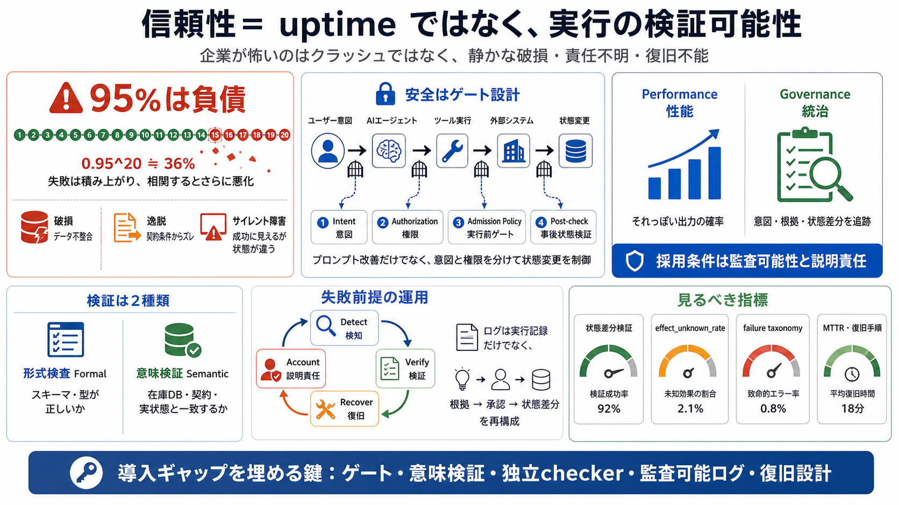

COVER
02 / 14
Reliability / 信頼性
採用
ギャップ
企業がAIエージェントを「95%できる」から導入できない本当の理由は、生産性ではなく実行の
責任を伴う検証
にあります。
（信頼性＝uptimeより、誤りの封じ込め・検知・復旧・説明責任）
前提：エージェントは複数ステップ/複数ツール/外部システム連携で動き、失敗は金銭・契約・運用安全に直結する。
PROBLEM
03 / 14
Uptimeは万能ではない
95%は
負債
「95%動く」はクラッシュ回避の話で、企業の怖さは
静かな破損（サイレント・コラプション）
です。
形式的に成功していても、状態（データ・契約・運用）が意図とズレたまま進み、後で気づいても遅いからです。
METAPHOR
04 / 14
運用は配線図
壊れるのは
推論
だけじゃない
エージェントは「答え」ではなく
状態遷移の連鎖
です。
途中で誤りが入ると、破損・逸脱（drift）・サイレント障害が“結果”として現れます。
Failure mode
破損（破れてしまう）
例：不整合な更新、データ破壊
Failure mode
逸脱（意図からズレる）
例：契約条件に反する手続き
Failure mode
サイレント障害
例：成功っぽいが状態が違う
企業への影響
検知遅延・監査不能・復旧困難
責任が定まらず運用が重い
EVIDENCE
05 / 14
失敗は積み上がる
確率は
幾何級数
単純に0.95が20ステップ続くと0.95^20≒36%で崩れます。
さらに重要なのは失敗が独立せず
相関（同じ盲点の反復）
で悪化し得る点です。
単発の安心
p=0.95
“高い”が条件付き
長期の連鎖
0.95^20≒0.36
20ステップで崩れる
相関の罠
同じ失敗が繰り返される
独立性の仮定が崩れる
DISTINCTION
06 / 14
検証には2種類ある
型（syntax）と
意味
（semantics）
形式検査は「形が正しいか」（JSONスキーマ等）を見ます。
意味検証は「外部の真実（在庫DB・契約・状態）に照らして正しいか」を見ます。
形式検査 / Formal
スキーマ妥当性・型
例：調達IDが正規形式
意味検証 / Semantic
根拠データ照合
例：在庫や契約と一致
ARCHITECTURE
07 / 14
安全はゲート設計
intent と
authorization
を分ける
対策は「プロンプト改善」ではなく、意図（intent）と権限（authorization）を分離し、
runtime admission policy
でツール実行や状態変更をゲートします。
事後状態も検証し、誤りを封じ込めます。
Intent（やりたいこと）
手順の意図を記述
例：発注の目的・条件
Authorization（許可）
実行権限を適用
例：部署/契約/上限
Admission Policy
実行前ゲート
例：到達可能sink/制約
Post-check
状態差分の検証
例：予測状態↔観測状態
PROCESS
08 / 14
失敗前提の運用
Detect / Verify / Recover
信頼性は「当たる」だけでなく、誤ったときに
検知・検証・復旧・説明責任
が回る設計です。
ログは実行ログでは足りず、意図と根拠から状態差分を再構成できる必要があります。
i
Detect / 検知
変化ではなく整合性（状態差分・制約）を観測
ii
Verify / 検証
形式＋意味を分け、外部根拠と照合
iii
Recover / 復旧
checkpoint・リカバリ手順で“取り消し”を可能にする
iv
Account / 説明責任
誰が何を根拠に承認し、どの状態がどう変化したかを監査可能にする
COMPARISON
09 / 14
“性能” vs “統治”
モデル精度より
監査可能性
採用ギャップの核心は、失敗時に責任者・復旧手順・再発防止が定まる
accountability/observability
です。
監視がクラッシュ検知だけだと、サイレント破損は残り続けます。
Performance / 性能
“それっぽい”出力の確率
改善しても運用責任は別問題
Governance / 統治
意図・根拠・状態差分の追跡
失敗時に説明できる
ARCHITECTURE
10 / 14
相関を崩す層
“独立なchecker”が
条件
検証（checker）が同じモデル・同じ失敗分布・同じ時間軸だと相関が残ります。
対策は別基盤（別モデル/別方式）や独立した観測層で、前提（独立性）を作ることです。
NG
同じ盲点の繰り返し
checkerも同じ失敗をする
OK
別基盤 / Substrate shift
観点や方式を変える
観測層
独立した検知経路
“同じ時間軸”を避ける
EVIDENCE
11 / 14
本人確認は終点じゃない
attestation は
論理ドリフト
を止めない
誰が送ったか（ID整合性）を確かにしても、ロジックレベルのドリフトは起きます。
だから事後状態の検証や状態遷移バリデータが必要です。
Identity / 本人性
送信者の整合性
attestationの範囲
Logic / 状態
意図した遷移の実現
post-checkが要る
ENUMERATION
12 / 14
見るべき指標
Uptime以外を
定量化
本当の信頼性に近づくのは uptime だけではありません。
状態差分検証、未観測の副作用（effect_unknown_rate）、失敗の分類（failure taxonomy）、人介入と復旧タイムラインを見ます。
State / 状態
状態差分の検証
予測状態↔観測状態
Unknown / 未観測
effect_unknown_rate
副作用が観測できない比率
Failure / 失敗
failure taxonomyの整備
予測可能性を上げる
Ops / 運用
人介入と復旧の時間
MTTR・手順の実効性
CLOSING
13 / 14
採用の条件
責任
を計算に入れる
AIエージェントの導入は「推論の計算量」だけでなく、「検証と責任のための構造」を計算する領域に移っています。
稼働率ではなく、ゲート・意味検証・監査可能ログ・復旧設計で採用ギャップを埋めましょう。
Must-have
runtime admission policy
権限・意図を分離し、実行を制御
Must-have
監査可能なログ
根拠→承認→状態差分を再構成
Bilingual note：reliability（信頼性）= 実行の検証可能性（verification）と説明責任（accountability）を含む。
REFERENCES
14 / 14
References
No references found